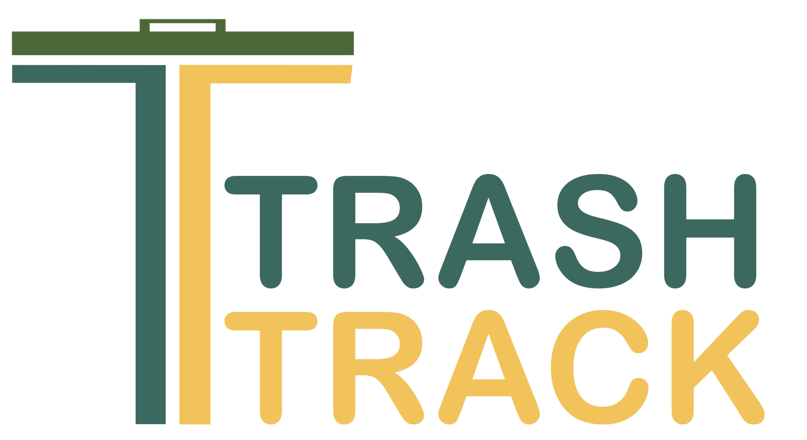

TrashTrack
TrashTrack adalah sistem tempat pembuangan sampah pintar yang menggunakan teknologi Internet of Things (IoT) dan analisis data untuk memonitor dan memilah sampah secara efisien dan real-time.
TrashTrack memungkinkan pengguna untuk menyampaikan keluhan dan masukan terkait tempat pembuangan sampah, serta jika sebagai operator dapat memantau dan mengelola keluhan dan masukan tersebut dan melihat analisis data sampah yang terkumpul melalui dashboard. TrashTrack tidak tersedia di Google Play Store. Anda dapat mengunduh dan menginstal aplikasi ini secara manual melalui file APK yang tersedia di riwayat rilis di disini..
Asal nama TrashTrack berasal dari gabungan kata "trash" (sampah) dan "track" (melacak). Nama ini dipilih karena aplikasi ini bertujuan untuk melacak dan memonitor sampah yang dibuang oleh pengguna secara real-time.
TrashTrack dikembangkan dan dibangun menggunakan React lewat Vite sebagai frontend aplikasi, Capacitor sebagai bridge antara aplikasi dengan perangkat mobile, Ionic dan TailwindCSS sebagai user interface dan styling, Nest.js sebagai backend API server, dan PostgreSQL dengan Prisma sebagai database. Nx digunakan sebagai alat teknis untuk mengelola monorepo dan membangun aplikasi secara bersamaan. Espresif digunakan untuk IoT dan perangkat keras.
Kode sumber tersedia di GitHub.
